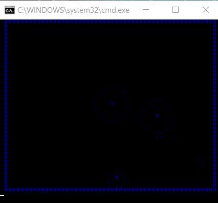

Here is one that demonstrates bouncing balls! I made this a few months back ^^

(sorry for bad quality)
Code: Select all
@echo off & setlocal enableDelayedExpansion
:: create array of lines height(40) with a string length of width(50)
set /a "width=50 - 1", "height=40 - 1", "conWidth=width + 5", "conHeight=height + 6", "_=0"
for /l %%a in (-2,1,%width%) do set "outerBuffer=!outerBuffer!#"
for /l %%a in (0,1,%width%) do set "widthBuffer=!widthBuffer! "
for /l %%a in (0,1,%height%) do set "_[%%a]=%widthBuffer%"
mode con: cols=%conWidth% lines=%conHeight%
:: create %balls% number of ball objects.
set "balls=5"
for /l %%b in (1,1,%balls%) do (
rem r = radius
set /a "r[%%b]=!random! %% 4 + 1"
rem x position
set /a "x[%%b]=!random! %% width + r[%%b]"
rem y position
set /a "y[%%b]=!random! %% height + r[%%b]"
rem i = x direction
set /a "i[%%b]=!random! %% 3 + 1"
rem j = y direction
set /a "j[%%b]=!random! %% 2 + 1"
rem c = character
set /a "c[%%b]=%%b"
rem bounce limits
set /a "bmaxW[%%b]=width - r[%%b]"
set /a "bmaxH[%%b]=height - r[%%b]"
set /a "bmin[%%b]=r[%%b]"
)
:: create %plot% and %circle% macro functions.--------------------------------------------------------
set ^"LF=^
^" Above empty line is required - do not remove
set ^"\n=^^^%LF%%LF%^%LF%%LF%^^"
set plot=for %%# in (1 2) do if %%#==2 ( for /f "tokens=1-3" %%1 in ("^!args^!") do (%\n%
set /a "_y=%%2", "_x=%%1", "_x2=%%1 + 1"%\n%
for /f "tokens=1-4" %%a in ("_y ^!_y^! ^!_x^! ^!_x2^!") do set "_[^!%%a^!]=^!_[%%b]:~0,%%c^!%%3^!_[%%b]:~%%d^!"%\n%
)) else set args=
:: %CIRCLE%
set circle=for %%# in (1 2) do if %%#==2 ( for /f "tokens=1-5" %%1 in ("^!args^!") do (%\n%
for /l %%y in (-%%3,1,%%3) do for /l %%x in (-%%3,1,%%3) do (%\n%
set /a "S=(%%x * %%x) + (%%y * %%y) - (%%3 * %%3)", "_3div2=%%3 / 2"%\n%
for /f "tokens=1,2" %%a in ("^!S^! ^!_3div2^!") do (%\n%
if "%%5" equ "/f" ( if %%a leq 1 ^!plot^! %%x+%%1 %%y+%%2 %%4 %\n%
) else if "%%5" equ "/n" ( if %%a geq -%%3 ^!plot^! %%x+%%1 %%y+%%2 %%4 %\n%
) else if %%a geq -%%3 if %%a leq %%b ^!plot^! %%x+%%1 %%y+%%2 %%4 %\n%
))%\n%
set "s="%\n%
)) else set args=
:: end of macros -------------------------------------------------------------------------------------
rem infinite loop of bouncing balls
for /l %%# in () do ( for /l %%b in (1,1,%balls%) do (
set /a "x[%%b]+=i[%%b]"
set /a "y[%%b]+=j[%%b]"
if !x[%%b]! geq !bmaxW[%%b]! set /a "x[%%b]=bmaxW[%%b]", "i[%%b]*=-1"
if !y[%%b]! geq !bmaxH[%%b]! set /a "y[%%b]=bmaxH[%%b]", "j[%%b]*=-1"
if !x[%%b]! leq !bmin[%%b]! set /a "x[%%b]=bmin[%%b]", "i[%%b]*=-1"
if !y[%%b]! leq !bmin[%%b]! set /a "y[%%b]=bmin[%%b]", "j[%%b]*=-1"
%plot% !x[%%b]! !y[%%b]! !c[%%b]!
%circle% !x[%%b]! !y[%%b]! !r[%%b]! .
)
cls
echo= %outerBuffer%
for /l %%a in (0,1,%height%) do echo= #!_[%%a]!#
echo= %outerBuffer%
for /l %%a in (0,1,%height%) do set "_[%%a]=%widthBuffer%"
)
But if you're looking for more of like a bouncing ball for arcade style games, I made this one as well ^^
Code: Select all
@echo off & setlocal enableDelayedExpansion
if "%~1" neq "" goto %~1
call :canvas 40 35
:: generate ball
call :generate_ball
:: generate self
set /a "mx=14", "my=height - 5", "mxl=mx + 9"
set /a "lives=5"
:: generate_objects
set "list="7,5" "13,5" "19,5" "25,5" "31,5" "7,7" "13,7" "19,7" "25,7" "31,7" "7,11" "13,11" "19,11" "25,11" "31,11" "win""
if exist %temp%\out.txt del %temp%\out.txt
"%~F0" Input >%temp%\out.txt | "%~F0" Engine <%temp%\out.txt
goto :eof
:Engine
for /l %%. in () do (
rem pick up input from out.txt
set "com=" & set /p "com="
rem use player input
if /i "!com!" equ "A" if !mx! geq 2 set /a "mx-=2"
if /i "!com!" equ "D" if !mxl! lss %width% set /a "mx+=2"
rem move the ball, and myself
set /a "bx+=bi","_x2=bx + 1"
set /a "by+=bj", "mxl=mx + 9"
rem Bounce off top, bottom, and right walls
if !bx! geq %width% set /a "bx=width", "bi*=-1"
if !bx! leq 0 set /a "bx=0", "bi*=-1"
if !by! leq 0 set /a "by=0", "bj*=-1"
rem Detect if we miss the ball
if !by! gtr %height% (
call :generate_ball
set /a "lives-=1"
if !points! geq 0 set /a "points-=5"
if !lives! equ 0 (
cls & for /l %%a in (1,1,17) do echo.
echo You lose! & pause > nul & exit
)
)
rem Detect if we hit the ball
if !by! equ !my! if !bx! geq !mx! if !bx! leq !mxl! set /a "bj*=-1", "points+=1"
rem Detect if it hits object
if !by! leq 12 (
set "newList="
for %%a in (!list!) do for /f "tokens=1,2 delims=," %%0 in ("%%~a") do (
if !bx! equ %%0 if !by! equ %%1 (
call set "_[!by!]=%%_[!by!]:~0,!bx!%% %%_[!by!]:~!_x2!%%"
set /a "bj*=-1", "points+=3"
set "newList=!list:"%%0,%%1"=!"
)
)
if defined newList set "list=!newList!"
)
rem Detect if we hit all the objects
if "!list!" equ "win" (
cls
for /l %%a in (1,1,17) do echo.
echo You Win!& echo.
echo SCORE: !points!
pause > nul & exit
)
rem Place leftover Objects
for %%a in (!list!) do for /f "tokens=1,2 delims=," %%0 in ("%%~a") do (
set /a "_x4=%%0 + 1"
call set "_[%%1]=%%_[%%1]:~0,%%0%%X%%_[%%1]:~!_x4!%%"
)
rem This is ball!
call set "_[!by!]=%%_[!by!]:~0,!bx!%%O%%_[!by!]:~!_x2!%%"
rem This is me!
call set "_[!my!]=%%_[!my!]:~0,!mx!%%---------%%_[!my!]:~!mxl!%%"
call :showCanvas
call :updateCanvas
echo= A/D - Move Points = !points! Lives = !lives!
)
exit /b
rem collect user input
:Input
for /f "tokens=*" %%a in ('choice /c:ad /n') do echo %%a
goto :Input
:generate_ball
set /a "bx=19", "by=13", "bi=(!random! %% 2) - 1", "bj=(!random! %% 2) - 1"
set /a "cfi=!random! %% 2 + 1", "cfj=!random! %% 2 + 1"
if !bj! equ 0 if !cfj! equ 2 ( set /a "bj-=1" ) else ( set /a "bj+=1" )
if !bi! equ 0 if !cfi! equ 2 ( set /a "bi-=1" ) else ( set /a "bi+=1" )
goto :eof
:canvas
set /a "width=%~1 - 1", "height=%~2 - 1", "conWidth=width + 5", "conHeight=height + 6"
for /l %%a in (-2,1,%width%) do set "outerBuffer=!outerBuffer!Û"
for /l %%a in (0,1,%width%) do set "widthBuffer=!widthBuffer! "
call :updateCanvas
if exist "%temp%\cursorpos.exe" ( set "cls="%temp%\cursorpos.exe" 0 0") else ( set "cls=cls")
mode con: cols=%conWidth% lines=%conHeight%
goto :eof
:updateCanvas
for /l %%a in (0,1,%height%) do set "_[%%a]=%widthBuffer%"
goto :eof
:showCanvas
cls
echo. & echo= %outerBuffer%
for /l %%a in (0,1,%height%) do echo= Û!_[%%a]!Û
echo= %outerBuffer%
goto :eof
goto :eof